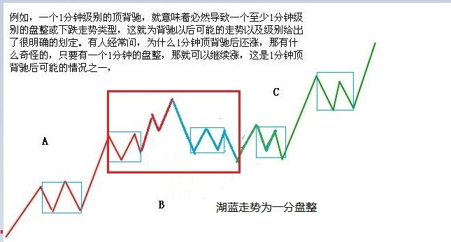
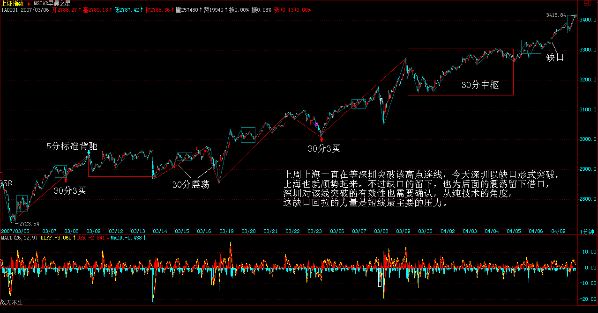
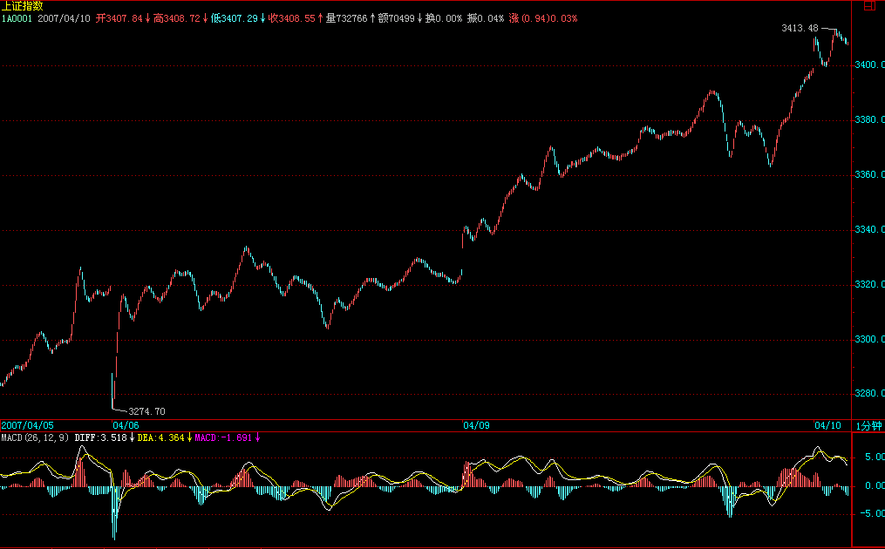

|
 |
教你炒股票43：有关背驰的补习课
(2007-04-06 15:31:28)
（注：小转大的情况在29课已经表达清楚，此处再细化）
发现很多人对最基础的背驰问题还是不大清楚，周末，来一补习。关于如何判断背驰，背驰与盘整背驰的区别之类问题就不说了，这个太基础，连这都没搞清楚，那最好的办法就是重修，而不是补习。
转折必然由背驰导致，但背驰导致的转折并不一定是同一级别的。在“教你炒股票29：转折的力度与级别”中有“缠中说禅背驰-转折定理：某级别趋势的背驰将导致该趋势最后一个中枢的级别扩展、该级别更大级别的盘整或该级别以上级别的反趋势。”这是一个十分重要的定理，这定理说明了什么？就是某级别的背驰必然导致该级别原走势类型的终止，进而开始该级别或以上级别的另外一个走势类型。
由于不允许“上涨+上涨”、“下跌+下跌”的情况，所以，这定理对实际操作就很有意义了。例如，一个1分钟级别的顶背驰，就意味着必然导致一个至少1分钟级别的盘整或下跌走势类型，这就为背驰以后可能的走势以及级别给出了很明确的划定。有人经常问，为什么1分钟顶背驰后还涨，那有什么奇怪的，只要有一个1分钟的盘整，那就可以继续涨，这是1分钟顶背驰后可能的情况之一，(注：背驰后中枢扩展）

当然，还有其他可能的情况，例如，最极端的，制造出一个年线级别的下跌，但不能说这个制造是由于1分钟顶背驰造成的，因为这是1分钟顶背驰后，形成的盘整或下跌逐步级别扩张，最后才慢慢形成的，如果随便看到一个1分钟顶背驰就说要形成年线级别大调整，那就是脑子水太多了。如果市场的转折与背驰都有这在级别上一一对应关系，那这市场也太没意思、太刻板了，而由于这种小级别背驰逐步积累后导致大级别转折的可能，才使得市场充满当下的生机。
注意，这两种不同的转折方式的区分是十分关键的。所有的转折都与背驰相关，但加上背驰的级别与当下走势级别的关系，就有了这两种不同的转折方式。由于背驰的级别不可能大于当下走势的级别，例如一个30分钟级别的背驰，只可能存在于一个至少是30分钟级别的走势类型中，所以就有这两种不同转折方式的明确分类。
一、背驰级别等于当下的走势级别
例如，一个30分钟的走势类型，出现一个30分钟级别的背驰，那么这个背驰至少把走势拉向该30分钟走势最后一个中枢，当然就会跌破或升破相应的高点或低点。注意，这种情况包括进入背驰段的情况，(注：趋势背驰与盘整背驰）例如，一个30分钟的走势类型，在30分钟级别进入背驰段，当然，这个背驰段并不一定就演化成背驰，因为，小级别的延伸足以使得大级别最终摆脱背驰，这与当下的走势判断相关。
二、背驰级别小于于当下的走势级别
这种情况下，是走势已经明显没有相应级别的背驰，例如，一个30分钟的走势类型，明确显示没有出现30分钟的背驰，也就是背驰段最终不成立，但却出现一个1分钟级别的背驰，用一个最简单的形式向上的a+A+b+B+c，A、B是30分钟中枢，在c中出现1分钟背驰，而c对b在30分钟级别并没有出现背驰，这时候并不必然保证c的1分钟转折的最终走势就一定不跌回B里，但即使这个回跌出现，其形式也和第一种情况不同。这第二种情况，必然要先形成一个比1分钟级别要大的中枢，然后向下突破，最终形成回跌到B中的走势。
有人可能要问，第一种情况中如果是5分钟级别的回跌，也会形成一个比1分钟级别大的中枢，那和第二种情况有什么区别？这区别太大了，在第一种情况中，其回跌是必然的，而第二种情况，在形成一个比1分钟大的中枢后，并不必然回跌，可以往上突破，使得a+A+b+B+c继续延伸。(娇：上下中枢的区别）.
这种小级别背驰最终转化成大级别转折的情况，最值得注意的，是出现在趋势走势的冲顶或赶底之中，这种情况一般都会引发大级别的转折，这种例子前面都说过，例如20070104的工行，20061207的北辰实业、20070122的水井坊等。
以上两种情况，对走势的分解也是很有意义的，例如对一个30分钟的走势类型，其完结也同样有相应的两种情况，最普通的一种，例如出现一个30分钟的背驰，从而完成一个30分钟级别走势类型，在这种情况下，对该走势类型的分解就不存在任何含糊的地方，前后两个走势类型，就以该背驰点为分界；至于小级别背驰引发大级别转折的情况，这种情况比较复杂，但分解的原则是一致的，就是：
缠中说禅走势类型分解原则：一个某级别的走势类型中，不可能出现比该级别更大的中枢，一旦出现，就证明这不是一个某级别的走势类型，而是更大级别走势类型的一部分或几个该级别走势类型的连接。
这里，把上面第二种情况下的分解可能分析如下：
不妨还是以上面向上30分钟级别的a+A+b+B+c为例子，在c中出现一个1分钟级别背驰，不妨假设后面演化出一个30分钟中枢C，如果C和B没有任何重叠，那就意味着原来的a+A+b+B+c并不是一个完成了的30分钟走势类型，该走势类型将延伸为a+A+b+B+c+C，相应的分解要等到该走势类型完成了才可以进行；如果C和B有重合，那么a+A+b+B+c+C=a+A+b+（B+c+C），其中（B+c+C）必然演化成(注：纯中枢分解）一个日线中枢，那么a+A+b+B+c只是一个日线级别走势类型的一部分，如果一定要按30分钟级别来进行同级别分解，那么该分解点就是那1分钟的背驰点，a+A+b+B+c+C=（a+A+b+B+c）+C。（注：同级别分解）
有了以上的例子，就对如何用背驰对走势分解的基本原则有一个大概的了解了，熟悉了这些分解方法，市场的走势图就不会是天书了，而是如自己的掌纹一样清晰可辩。
每日解盘（2007-04-06 15：32：12)
缠中说禅 2007-04-06 15:32:12
今天深圳已经实现对那条压力线的冲击，不过还没有突破站上去，某种程度上，这是汉奸最后的防线了，一旦突破站稳，那深圳的1万点就在本ID的强大炮火下了。
缠中说禅2007-04-09 15:33:39 [举报]
大盘继续按剧本演绎，汉奸今天被打成了缩头乌龟，除了搞些小动作，没什么作为。上周上海一直在等深圳突破该高点连线，今天深圳以缺口形式突破，上海也就顺势起来。不过缺口的留下，也为后面的震荡留下借口，深圳对该线突破的有效性也需要确认，从纯技术的角度，这缺口回拉的力量是短线最主要的压力。


43课缠师的回帖整理
缠中说禅：
2007-04-06
15:43:18
[匿名] 平安保险
缠中说禅：
2007-04-06
15:45:18
[匿名] 缠心雕龙
缠中说禅：
2007-04-06
15:49:55
[匿名] 后知后觉
缠中说禅：
2007-04-06
15:53:58
[匿名] 新浪网友
缠中说禅：
2007-04-06
16:00:06
[匿名] 兰兰
缠中说禅：
2007-04-06
16:04:23
[匿名] 瞎鼓捣
缠中说禅：
2007-04-06
16:05:22
[匿名] 中信海直
缠中说禅：
2007-04-08
12:53:45
外面的柳芽都出来了，阳光在水面上晃荡，野鸭子在阳光里搔首弄姿，本ID要出去瞧瞧。
缠中说禅：
2007-04-09
15:47:15
步点
缠中说禅：
2007-04-09
15:52:54
[匿名] 缠心雕龙 (注：39课中---但这种操作不管这么多，只理会一点，就是Ai与Ai+2之间是否盘整背驰，只要盘整背驰，就在i+2为偶数时卖出，为奇数时买入。如果没有，当i为偶，若Ai+3不跌破Ai高点，则继续持有到Ai+k+3跌破Ai+k高点后在不创新高或盘整顶背驰的Ai+k+4卖出，其中k为偶数；当i为奇数，若Ai+3不升破Ai低点，则继续保持不回补直到Ai+k+3升破Ai+k低点后在不创新低或盘整底背驰的Ai+k+4回补。
后面的句子就是考虑了小级别背驰导致大级别转折的情况。属于段间没有盘背小转大下的转折，跌破Ai+K高点）
缠中说禅：
2007-04-09
16:00:00
[匿名] 水房姑娘
缠中说禅：
2007-04-09
16:03:54
[匿名] 你的样子
缠中说禅：
2007-04-09
16:10:19
[匿名] 后知后觉
缠中说禅：
2007-04-09
16:11:23
[匿名] 新浪网友
缠中说禅：
2007-04-09
21:35:50
[匿名] 勇敢的心
缠中说禅：
2007-04-09 21:38:13
[匿名] 大盘
缠中说禅：
2007-04-09
21:42:01
星星 2、如果最少由5段构成，即a+(A1+A2+A3)+b，那么第二类买卖点是在A1的末段还是在A3的末段？
缠中说禅：
2007-04-09
21:51:46
[匿名] 明天启程
缠中说禅：
2007-04-09
21:57:54
[匿名] 糊涂虫
缠中说禅：
2007-04-09 21:59:27
[匿名] 呵呵
缠中说禅：
2007-04-09
22:01:54
[匿名] 漂泊 |
|
|
|